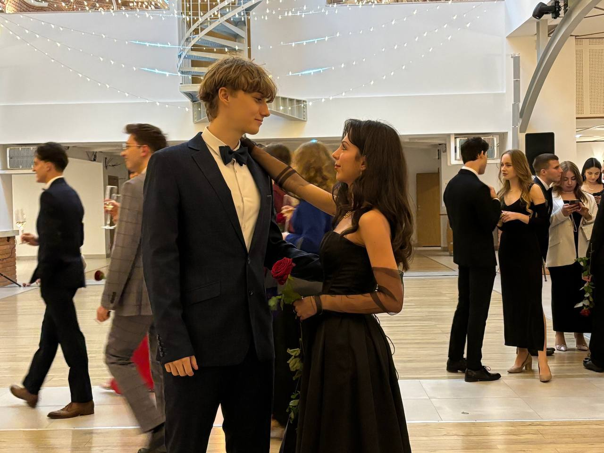
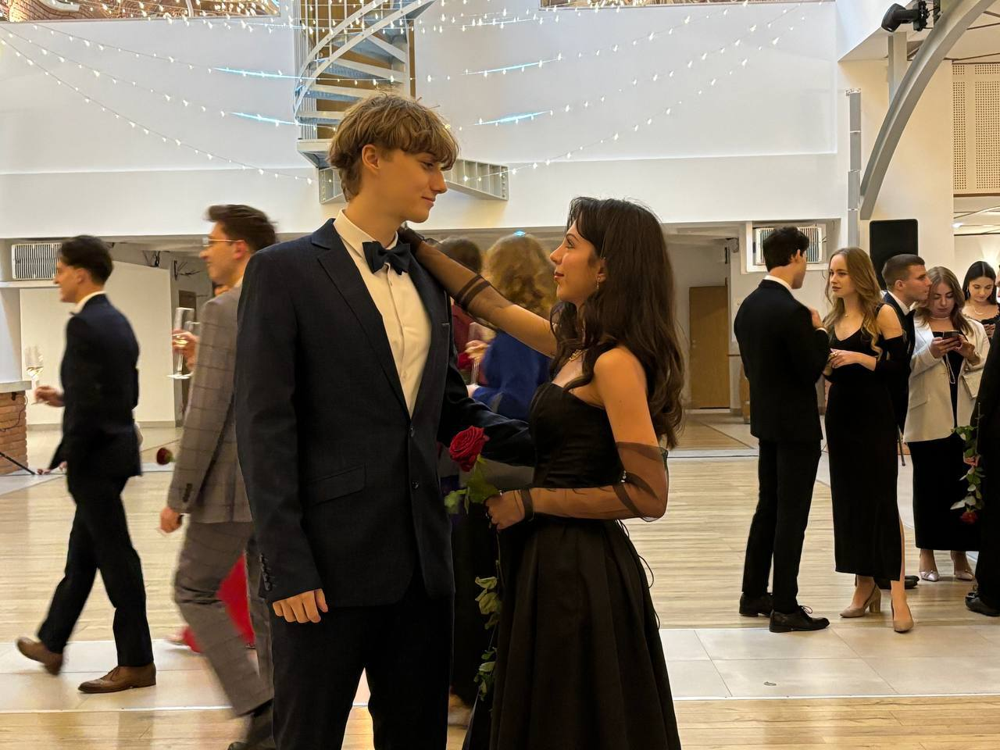

About Me

Hi! My name is Bartosz Hadala and I am a student of Electronics
and Telecommunications at AGH University of Science and Technology
in Krakow.
I am passionate about microcontrollers, signal modulation
techniques, and all aspects of modern electronics. I enjoy working
with various programming languages and embedded systems,
constantly seeking new challenges and innovative solutions.
I am also an active member of the Micro Student Research Group,
where I collaborate on innovative electronics projects and expand
my practical skills.

 



My Projects
Relaxation Oscillator with Operational Amplifiers
This project showcases the design and implementation of a relaxation oscillator based on operational amplifiers, a key component for generating periodic signals such as square, triangle, and sawtooth waveforms. Widely used in measurement and control systems, my solution combines theoretical analysis, simulation, and practical testing. I focused on optimizing circuit stability and signal quality, analyzing the impact of real-world component imperfections and operational amplifier parameters. The result is a reliable, versatile oscillator, verified both in simulation and laboratory conditions.
Smart Door Locker Project (ATmega Based)
Developed a secure and intelligent door locking system using an ATmega microcontroller. The project features keypad access, password management, and real-time status indication via LEDs and buzzer. Designed and programmed the embedded system in C++, implemented safety mechanisms, and created a user-friendly interface for configuration. The solution demonstrates practical skills in microcontroller programming, hardware integration, and electronic security.
Analog Filter Design
Designed and simulated analog filters with adjustable component values and selectable circuit topologies. Used MATLAB to generate response curves and amplitude-frequency graphs, allowing for precise analysis and optimization of filter performance. The project demonstrates skills in analog electronics, mathematical modeling, and practical use of simulation tools for engineering design.
Contact
Email: hadalabartosz@gmail.com
Phone: +48 575 121 605
LinkedIn: linkedin.com/in/bartoszhadala
City: Krakow